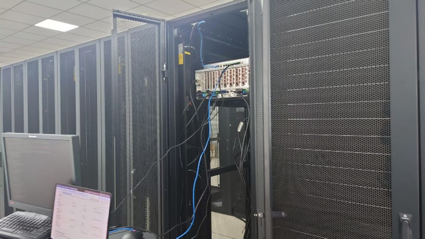
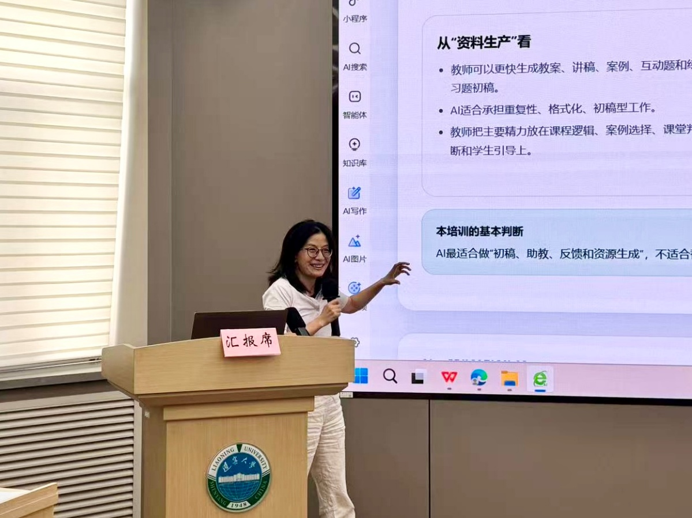
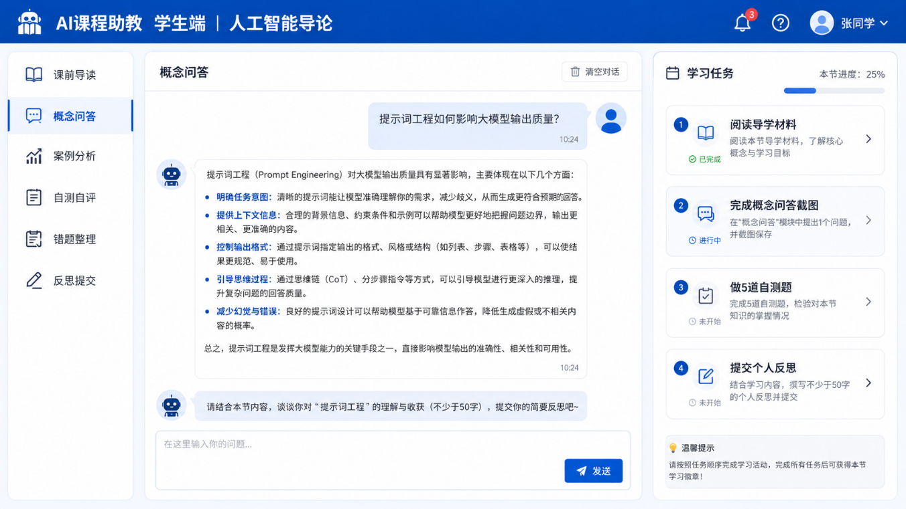
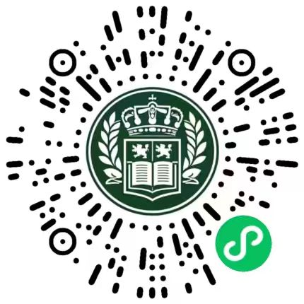

教师平台使用培训
远程登录与基本操作
使用规范与权限接入
自建“关东骐骥”共享算力平台，配套教师使用培训与人工智能赋能培训，以《人工智能》课程示范教学应用，支持学生在真实研究和开发任务中比较方法、验证结果并形成成果。
平台提供计算资源，培训帮助教师接入资源并掌握应用方法。学生在教师指导下开展真实研究和开发，形成可检查的实验结果与项目作品。
总体资源支撑 · 模型训练 · 重复实验 · 模拟计算
远程登录与基本操作
使用规范与权限接入
教学样例为《人工智能》课程
科研结合具体研究任务讲解方法
经济学科研与外语教育
结合学科问题与数据特点
部分代表性项目并列开展
数据处理 · 方法选择 · 结果验证与解释 · 论文稿与应用作品
图示说明资源、培训与学生实践的实施关系。成长平台依托项目本地算力部署；各应用按照实际运行环境实施。
每张24GB显存计算卡
已开通账号
已服务课题组
截至2026年10月已开展3次平台使用培训。首期培训于2025年10月23日开展，2026年4月起面向全校开放。

平台使用培训帮助教师接入算力；通用应用培训示范教学与科研方法；分学科培训结合专业问题调整用法。
以《人工智能》课程示范教学活动设计与学习支持。
讲解资料处理、研究任务组织与人工智能应用方法。
结合经济学问题与数据特点讲解具体方法。
结合外语教育的教学与研究需求展示应用。

四类应用培训累计覆盖170余人次。该统计为培训参与人次，平台使用培训次数另行统计。
备课助教辅助活动设计，学习助教提供导读、自测与反馈，数字人讲解经教师审定的内容。教师可据此设计本学科的教学与学习支持活动。

未开启修改教学任务并调用大模型生成内容。未开启输入会发送至大语言模型；生成结果请由教师或学习者核验。页面初始内容为课程样例。
选择任务，补充学生背景、教学目标与时间安排，再生成教学方案。
教师审核：检查概念准确性、任务难度与课程目标的一致性。
先完成课程自测，也可输入自己的学习问题或作答，让大语言模型提供提示与解释。
输入主题、时长与教学重点，生成可朗读的讲稿，经教师审定后用于数字人制作。
大语言模型生成讲稿文本。教师审核后可用于数字人视频制作；本页不直接合成视频。
以下选取部分代表性学生项目，分别面向医学、工程、经济与教育问题。项目并列开展，共同呈现数据处理、方法运用、结果验证和解释的实践过程。
学生参与开发，依托本地算力部署，将实践记录、成果与导师评价关联为可追溯证据链。
2026年8月开放以来，已有100多人使用。
使用微信扫一扫识别小程序码，进入应用。
查看完整小程序码
项目材料呈现论文稿、实验比较或应用展示；不将其等同于期刊录用或已测量的能力提升。医学项目用于研究训练。
课程任务与教学工具为教师提供参照；学生项目材料呈现研究和开发过程。后续可将方法比较、误差分析与模型验证等内容整理为课程案例。